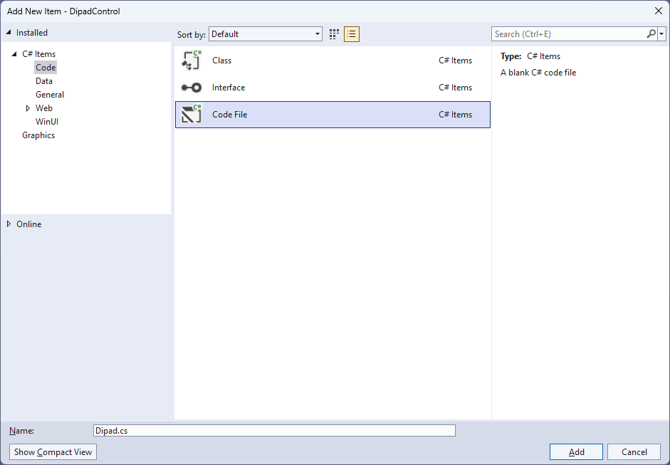
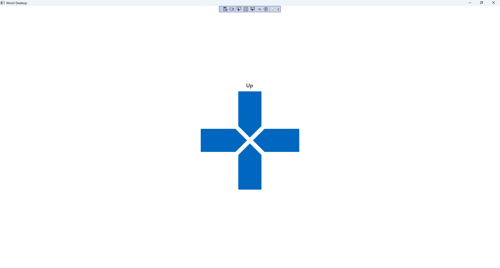

Dipad Control
Learn creating a Directional Pad using Windows App SDK with this Tutorial
Dipad Control shows how to create a Directional Pad that can be used for selecting a Direction using Windows App SDK.
Step 1
Follow Setup and Start on how to get Setup and Install what you need for Visual Studio 2022 and Windows App SDK.


Step 2
Then in Visual Studio within Solution Explorer for the Solution, right click on the Project shown below the Solution and then select Add then New Item…

Step 3
Then in Add New Item from the C# Items list, select Code and then select Code File from the list next to this, then type in the name of Dipad.cs and then Click on Add.

Step 4
Step 5
You will now be in the View for the Code of Dipad.cs, within this type the following Code:
using Microsoft.UI.Input;
using Microsoft.UI.Xaml;
using Microsoft.UI.Xaml.Controls;
using Microsoft.UI.Xaml.Data;
using Microsoft.UI.Xaml.Input;
using Microsoft.UI.Xaml.Markup;
using Microsoft.UI.Xaml.Media;
using Microsoft.UI.Xaml.Shapes;
using System;
namespace DipadControl;
public enum DipadDirection
{
Up,
Down,
Left,
Right
}
public class Dipad : Grid
{
// Constants, Event, Dependency Property & Property
// GetPath & GetDirection Methods
// Add Method
// Constructor
}
There are using statements for the User Control, a namespace for DipadControl with an enum for the Directions
along with a class of Dipad that will represent the User Control for the Directional Pad.
Step 6
Then in the namespace of DipadControl in the class of Dipad after the Comment
of // Constants, Event, Dependency Property & Property type the following Constants, Event,
Dependency Property and Property:
private const int size = 3;
private const string path_up = "M 0,0 40,0 40,60 20,80 0,60 0,0 z";
private const string path_down = "M 0,20 20,0 40,20 40,80 0,80 z";
private const string path_left = "M 0,0 60,0 80,20 60,40 0,40 z";
private const string path_right = "M 0,20 20,0 80,0 80,40 20,40 z";
public delegate void DirectionEvent(object sender, DipadDirection direction);
public event DirectionEvent Direction;
public static readonly DependencyProperty ForegroundProperty =
DependencyProperty.Register(nameof(Foreground), typeof(Brush),
typeof(Dipad), null);
public Brush Foreground
{
get { return (Brush)GetValue(ForegroundProperty); }
set { SetValue(ForegroundProperty, value); }
}
Constants include the Paths needed to represent the different directional parts of the Directional Pad and there is also a
delegate along with an event for when a particular direction of the Directional Pad is interacted with. There is also a
Dependency Property and Property for the Foreground of the Directional Pad.
Step 7
While still in the namespace of DipadControl in the class of Dipad after the Comment
of // GetPath & GetDirection Methods type the following Methods:
private static Path GetPath(string value) =>
(Path)XamlReader.Load(
@$"<Path xmlns='http://schemas.microsoft.com/winfx/2006/xaml/presentation'>
<Path.Data>{value}</Path.Data>
</Path>");
private void GetDirection(object sender, PointerRoutedEventArgs e)
{
var path = (Path)sender;
var point = e.GetCurrentPoint(this);
bool fire = (e.Pointer.PointerDeviceType == PointerDeviceType.Mouse) ?
point.Properties.IsLeftButtonPressed : point.IsInContact;
if (fire)
{
Direction?.Invoke(path, (DipadDirection)
Enum.Parse(typeof(DipadDirection), path.Name));
}
}
The Method of GetPath will be used to obtain a Path from the Constants defined earlier and
GetDirection will determine if the Directional Pad has been interacted with and for which Direction.
Step 8
While still in the namespace of DipadControl in the class of Dipad after the Comment
of // Add Method type the following Method:
private void Add(Grid grid,
DipadDirection direction, string value,
int row, int column,
int? rowspan, int? columnspan,
VerticalAlignment? vertical = null,
HorizontalAlignment? horizontal = null)
{
var path = GetPath(value);
path.Margin = new Thickness(5);
path.Name = direction.ToString();
if (vertical != null)
path.VerticalAlignment = vertical.Value;
if (horizontal != null)
path.HorizontalAlignment = horizontal.Value;
path.SetBinding(Shape.FillProperty, new Binding()
{
Path = new PropertyPath(nameof(Foreground)),
Mode = BindingMode.TwoWay,
Source = this
});
path.PointerPressed += GetDirection;
path.PointerMoved += GetDirection;
path.SetValue(RowProperty, row);
path.SetValue(ColumnProperty, column);
if (rowspan != null)
path.SetValue(RowSpanProperty, rowspan);
if (columnspan != null)
path.SetValue(ColumnSpanProperty, columnspan);
grid.Children.Add(path);
}
Add will be used to add items to the Directional Pad for each of the Directions along with Binding the Shape that uses a
Path with the Property of Foreground for the User Control.
Step 9
While still in the namespace of DipadControl in the class of Dipad after the Comment
of // Constructor type the following Constructor:
public Dipad()
{
var grid = new Grid()
{
Height = 180,
Width = 180
};
grid.Children.Clear();
grid.ColumnDefinitions.Clear();
grid.RowDefinitions.Clear();
for (int index = 0; index < size; index++)
{
grid.RowDefinitions.Add(new RowDefinition()
{
Height = (index == 1) ? GridLength.Auto :
new GridLength(100, GridUnitType.Star)
});
grid.ColumnDefinitions.Add(new ColumnDefinition()
{
Width = (index == 1) ? GridLength.Auto :
new GridLength(100, GridUnitType.Star)
});
}
Add(grid, DipadDirection.Up, path_up, 0, 1, 2, null,
VerticalAlignment.Top, null);
Add(grid, DipadDirection.Down, path_down, 1, 1, 2, null,
VerticalAlignment.Bottom, null);
Add(grid, DipadDirection.Left, path_left, 1, 0, null, 2, null,
HorizontalAlignment.Left);
Add(grid, DipadDirection.Right, path_right, 1, 1, null, 2, null,
HorizontalAlignment.Right);
var box = new Viewbox()
{
Child = grid
};
Children.Add(box);
}
The Constructor will be used to create the look-and-feel of the User Control and will use the Method of
Add for each of the Directions needed to be displayed for the Directional Pad.
Step 10
Step 11
In the XAML for MainWindow.xaml there will be some XAML for a StackPanel, this should be Removed:
<StackPanel Orientation="Horizontal"
HorizontalAlignment="Center" VerticalAlignment="Center">
<Button x:Name="myButton" Click="myButton_Click">Click Me</Button>
</StackPanel>
Step 12
While still in the XAML for MainWindow.xaml above </Window>, type in the following XAML:
<StackPanel Margin="50" VerticalAlignment="Center" HorizontalAlignment="Center">
<TextBlock Name="Label" HorizontalAlignment="Center"
Style="{StaticResource SubtitleTextBlockStyle}"/>
<local:Dipad x:Name="Pad" Height="400" Width="400"
Foreground="{ThemeResource AccentButtonBackground}"
Direction="Direction"/>
</StackPanel>
This XAML contains a StackPanel including a TextBlock and the User Control of Dipad with the Event of Direction.
Step 13
Step 14
In the Code for MainWindow.xaml.cs there be a Method of myButton_Click(...) this should be Removed by removing the following:
private void myButton_Click(object sender, RoutedEventArgs e)
{
myButton.Content = "Clicked";
}
Step 15
Once myButton_Click(...) has been removed, within the Constructor of public MainWindow() { ... } and below the line of this.InitializeComponent(); type in the following Code:
private void Direction(object sender, DipadDirection direction) =>
Label.Text = direction.ToString();
The Method of Direction will be used with Event Handler from the XAML to display the selected Direction.
This Method uses Arrow Syntax with the => for an expression body which is useful when a Method only has one line.
Step 16
Step 17
Once running you will see the Dipad Control displayed, then you can select the parts of the Directional Pad for Up, Down, Left and Right.

Step 18